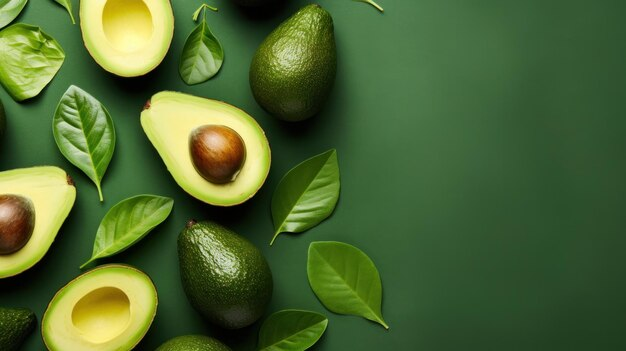
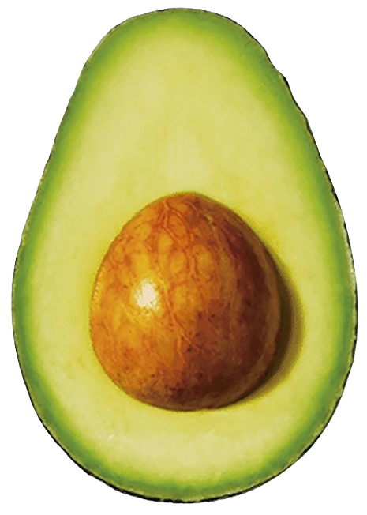
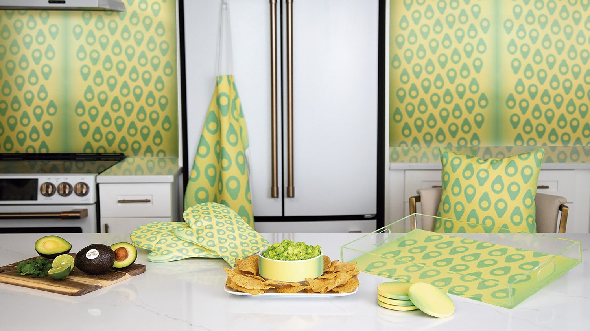
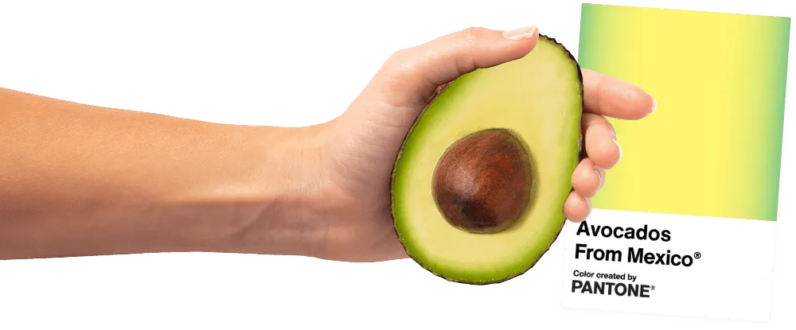
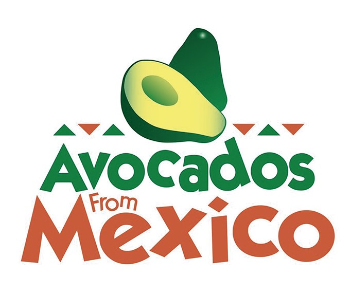
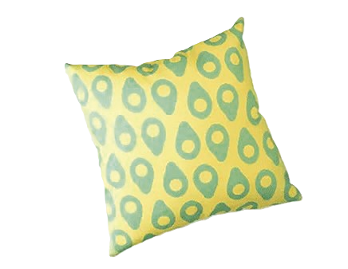
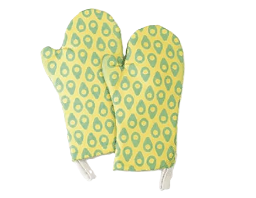

<!DOCTYPE html>
<html lang="es">
<head>
    <meta charset="UTF-8">
    <meta name="viewport" content="width=device-width, initial-scale=1.0">
    <title>LUZ Y TINTA</title>
    <link href="https://fonts.googleapis.com/css2?family=Century+Gothic&display=swap" rel="stylesheet">
    <link href="https://fonts.googleapis.com/css2?family=Century+Schoolbook&display=swap" rel="stylesheet">
    <link href="https://fonts.googleapis.com/css2?family=Philosopher&display=swap" rel="stylesheet">
    <style>
        body {
            font-family: 'Philosopher', sans-serif;
            background-color: #f4f4f4;
            margin: 0;
            padding: 0;
            padding-top: 50px;
        }

        .navbar {
            background-color: #000000;
            overflow: hidden;
            display: flex;
            justify-content: flex-start;
            align-items: center;
            padding: 16px;
            position: fixed;
            width: 100%;
            top: 0;
            z-index: 1000;
        }

        .navbar a {
            color: #f2f2f2;
            text-align: center;
            padding: 14px 15px;
            text-decoration: none;
            font-size: 14px;
        }

        .navbar a:hover {
            background-color: #ddd;
            color: black;
        }

        .search-bar {
            flex-grow: 1;
            display: flex;
            justify-content: center;
        }

        .search-bar input {
            padding: 3px;
            margin-top: 0px;
            font-size: 14px;
            border: none;
            border-radius: 4px;
        }

        .section {
            padding: 60px;
            margin: 20px;
            background-color: white;
            border-radius: 0;
            box-shadow: 0px 0px 10px rgba(0, 0, 0, 0.1);
        }

        .imagen-container {
            position: relative;
            width: 100%;
            overflow: hidden;
        }

        .imagen-container img {
            width: 100%;
            height: auto;
            max-height: 250px;
            object-fit: cover;
            display: block;
        }

        .banda-texto {
            background-color: #000000;
            color: white;
            padding: 10px 10px;
            text-align: center;
            font-size: 18px;
            margin: 0;
            font-family: 'Philosopher', sans-serif;
        }

        .texto-superpuesto {
            position: absolute;
            top: 50%;
            left: 70%;
            transform: translate(-50%, -50%);
            color: white;
            font-size: 70px;
            font-weight: bold;
            text-shadow: 2px 2px 4px rgba(0, 0, 0, 0.7);
            text-align: right;
        }

        .recuadro {
            background-color: #9BAD1E;
            padding: 20px;
            color: white;
            margin: 0;
            border-radius: 0;
            text-align: center;
            font-family: 'Century Schoolbook', serif;
            display: flex;
            justify-content: space-between;
            align-items: center;
        }

        .recuadro img {
            width: 350px;
            height: auto;
            margin-left: 50px;
        }

        .recuadro h2, .recuadro p {
            margin: 10;
            text-align: justify;
            padding-left: 20px; 
        }

        .recuadro-2 {
            background-color: #ffffff;
            padding: 20px;
            color: #000000;
            margin: 0;
            border-radius: 0;
            text-align: center;
            font-family: 'Century Schoolbook', serif;
            display: flex;
            justify-content: space-between;
            align-items: center;
        }

        .recuadro-2 img {
            width: 1200px;
            height: auto;
            margin-left: 0px; 
        }

        .recuadro-2 h2, .recuadro-2 p {
            margin: 10;
            text-align: justify;
            padding-left: 20px; 
        }

        .columnas {
            display: flex;
            justify-content: space-between;
        }

        .columna {
            flex: 1;
            padding: 10px;
            text-align: justify;
        }
         @media (max-width: 768px) {
    .navbar a {
        font-size: 12px;
        padding: 10px    
    
    }
                 
    .section {
        padding: 30px;
        margin: 10px;
    }

    .recuadro img, .recuadro-2 img, .recuadro3 img, .recuadro-9 img {
        width: 100%; 
        margin: 10px 0; 
    }

    .recuadro, .recuadro-2, .recuadro3, .recuadro-9 {
        flex-direction: column; 
        align-items: center; 
    }

    .columnas {
        flex-direction: column; 
    }

    .columna {
        margin-bottom: 20px; 
    }

    .texto-superpuesto {
        font-size: 40px; 
    }

    .banda-texto {
        font-size: 16px; 
        padding: 8px; 
    }

    .imagen-container img {
        max-height: 200px; 
    }
    .menu-toggle {
            display: none;
            cursor: pointer;
            font-size: 24px;
            color: #f2f2f2;
        }

        .nav-links {
            display: flex;
            flex-wrap: wrap;
        }

        .nav-links.hidden {
            display: none;
        }
              .menu-icon {
            display: none; 
            font-size: 30px;
            cursor: pointer;
            padding: 14px;
           color: white;
            height: 20px;
        }

        .menu-items {
            display: flex;
        }
         @media (max-width: 768px) {
    .menu-icon {
        display: block; 
        
    }

    .menu-items {
        display: none; 
        flex-direction: column; 
        width: 100%; 
    }

    .menu-items a {
        padding: 10px 20px; 
        text-align: left; 
    }

    .menu-items.active {
        display: flex; 
    }
    
    </style>
</head>
<body>
    <div class="imagen-container">
        
        <div class="texto-superpuesto">De huerto a la paleta</div> 
    </div>

    <div class="banda-texto">
        Tintas de inspiración
    </div>

    <div class="navbar" style="font-family: Philosopher, sans-serif">
    <div class="menu-icon" onclick="toggleMenu()">
        &#9776; 
    </div>    
<div class="menu-items" id="menuItems">

            <a href="index.html">Inicio</a>
            <a href="frescura.html">Frescura Gráfica</a>
            <a href="tintas.html">Tintas de inspiración</a>
            <a href="mexicana.html">Diseño a la Mexicana</a>
            <a href="lente.html">A través del Lente</a>
            <a href="voces.html">Voces del diseño</a>
            <a href="siluetas.html">Siluetas y Serifas</a>
            <a href="ebook.html">Ebook</a>
        </div>
      
    </div>
    
    <div class="recuadro">
        <div>
            <h2>Una mezcla fresca con degradado de amarillo y verde que encarna la madurez perfecta de la amada fruta de México.</h2>
            <i>Laurie Pressman
                Vicepresidenta del Pantone Color Institute</i>
            <p>Con su distintivo brillo amarillo verdoso, el color de la marca Avocados From Mexico® recuerda instantáneamente a la cremosa fruta del aguacate originario de México. Símbolo de este ingrediente único y rico en nutrientes, el color de los aguacates de México® da lugar a una energía inconfundible que puedes sentir y saborear.Con su combinación de un centro amarillo cremoso, enmarcado por un verde terroso, cuenta una historia del delicioso sabor y la frescura natural, de un ingrediente saludable para el corazón representado por una marca cuyo objetivo es hacer que todo sea mejor; uno que te invita a unirte a una celebración alegre y a vivir la vida al máximo con la vitalidad inspirada por el espíritu tradicional de la mexicanidad.Si eres Avocados From Mexico, recurres al Pantone Color Institute para crear un tono verde amarillento distintivo que distingue la identidad visual de la marca de los aguacates cultivados en otras regiones del mundo. Si bien esta es la primera marca de productos agrícolas con la que hemos colaborado, el objetivo era bastante familiar: desarrollar un tono distintivo que Avocados From Mexico pudiera emplear en todos los programas de marketing para construir una fuerte conexión con los consumidores. El plan de marketing de Avocados From Mexico también incluía darle vida a este color a través del lanzamiento de su nueva colección de productos para el hogar Avocado Glow.
            </p>
        </div>
        
    </div>
<div class="recuadro-2">
       
    </div>
    
    <div class="recuadro-2">
      <div class="columnas">
            <div class="columna">
            <h2>Combinando tonos maduros con un rico legado<br></h2>
            <p>El nuevo color de la marca Avocados From México, con el brillo verde amarillento que simboliza este superalimento rico en nutrientes, resalta el nivel de madurez perfecto de esta amada fruta y la experiencia festiva de reunirse con familiares y amigos alrededor de un tazón de guacamole perfectamente maduro. Un amarillo cremoso y mantecoso enmarcado por un verde césped terroso, el tono Avocados From Mexico cuenta una historia de sabor y frescura, que combina la alegre celebración de la vitalidad y el espíritu tradicional de la mexicanidad con el gusto apetitoso y la satisfacción de comer alimentos nutritivos, deliciosos y buenos para la mente, el cuerpo y el alma. </p>
            </div>
          
          <div class="columna">
              <h2>Donde el bienestar se encuentra con la fantasía<br></h2>
            <p>Fiel a su nombre, la colección Avocado Glow le da a los hogares el brillo definitivo. El interés de la sociedad por el bienestar ha hecho resurgir el interés por los colores naturales que elevan el ánimo. Los verdes vegetales y los amarillos ricos en vitaminas se pueden utilizar en enfoques terapéuticos para aliviar el estrés y potenciar el bienestar mental. La colección Avocado Glow, una tonalidad de color que expresa nuestro deseo de llevar el aire libre al interior, resalta nuestra atracción por los tonos vinculados al ciclo orgánico de la naturaleza.</p>
              </div>
           </div>
           </div> 
    
    <div class="recuadro-2">
       
    </div>
           <div class="recuadro">
        <div>
            <p>La línea seleccionada incluye siete elementos esenciales para el entretenimiento y la decoración, entre ellos un cojín decorativo, un papel tapiz, un delantal, guantes de cocina, posavasos, una bandeja para servir y, por supuesto, un bol de guacamole.El color de la marca presenta un distintivo amarillo verdoso, inspirado en el aguacate. Asimismo, Pantone comparte que la elección de tonalidades emula la cremosidad y el reconocible sabor del aguacate para que, con solo verlo, pueda saborearlo.</p>
            
            <p>Tanto los guantes como el cojin se fabrican utilizando materiales eco-amigables, reflejando el compromiso de ambas marcas con la sostenibilidad y el medio ambiente.La línea combina funcionalidad y estética, siendo perfecta para quienes disfrutan de cocinar y desean un espacio de cocina estilizado y alegre.Esta colaboración ofrece una forma refrescante de incorporar el amor por los aguacates en la vida cotidiana, fusionando el arte del color y la cocina de una manera única.</p> 
        </div>
          
    </div>
    
     <div class="recuadro-2">
    <div class="columnas">
            <div class="columna">
            <h2>Cojín de cocina<br></h2>
            <p>No solo proporciona comodidad durante la preparación de alimentos, sino que también tiene un diseño que complementa cualquier decoración, infundiendo un toque de frescura. </p>
            </div>
          
          <div class="columna">
              <h2>Guantes de cocina<br></h2>
            <p>Los guantes están diseñados para ofrecer una protección superior contra el calor, permitiendo que los amantes de la cocina manejan alimentos calientes sin preocuparse.</p>
              </div>
           </div>
    </div>
    <div class="recuadro-2">
        
        
    </div>
<script>
    function toggleMenu() {
    const menuItems = document.getElementById('menuItems');
    menuItems.classList.toggle('active');
    }

    </script>

</body>
</html>